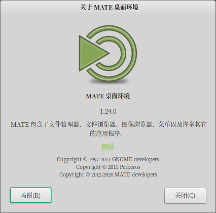

MATE 1.24 发布
经过大约一年的开发，MATE Desktop 团队终于发布了 MATE 1.24。非常感谢帮助实现这一目标的所有贡献者。

MATE 1.24 的新特性
此版本包含许多新功能，Bug 修复和常规改进。 一些最重要的亮点包括：
- 我们再次这样做，一旦用户启动会话，MATE桌面环境将比以前更易于使用。 您要隐藏应用程序吗？ 现在，您可以设置要在启动时显示的应用程序。
- Engrampa 现在支持一些其它格式，并且其中一些密码和Unicode字符支持得到了修复。
- MATE之眼 现在支持Wayland，并且增加了对嵌入式颜色配置文件的支持。 * 缩略图生成器已在多处进行了修复。 * 添加了对 webp 文件的支持。
- 窗口管理器 marco 进行了很多更改：
- 我们带来了一堆过去的窗口装饰，以满足您的怀旧情怀。
- 最后添加了不可见的调整大小边框。无需再为寻找不到边框而费劲了！ * 所有窗口控件（最小、最大、关闭按钮）现在都以 HiDPI 呈现。
- Alt_Tab 和工作区切换器弹出窗口已完全重写。现在，它们以精美的OSD样式进行渲染，更易于配置，并且可以响应键盘箭头。
- 现在，使用键盘平铺窗口允许您循环浏览不同的窗口大小。您不再只受限于一半的屏幕。
- 系统监视器 面板小程序现在支持 NVMe 驱动器。
- Calculator now supports using either “pi” or “π”.
- 计算器 现在支持使用“ pi”或“π”。 * 科学记数法得到了改进。 * 一些预定义物理常数支持得到了修复。
- 控制中心 现在可以在HiDPI显示屏上正确显示其图标。
- 添加了一个全新的 时间和日期管理器 应用程序。
- 鼠标 应用程序现在支持加速配置文件。
- 改进了 首选应用程序 应用程序，以提高可访问性，并更好地支持与IM客户端的集成。
- The Indicator Applet has slightly better interaction with oddly-sized icons.
- 说到图标，网络管理器小程序图标在我们自己的主题已经完全重新设计，现在可以在 HiDPI 显示器中享受。
- 如果您是那种在忙碌、演讲或看电影时不喜欢被打扰的人，您会很高兴知道 通知守护程序 现在支持了“请勿打扰” 模式。
-
MATE 面板 有几个错误在过去更改布局时导致崩溃。这些现在已经修好了！
- 对 Wayland 兼容性的支持已大为改善。
- 状态图标（即 通知区域 或 系统托盘）支持 HiDPI 显示。
- 万达鱼 得到了一个改造，现在你可以享受她完全的 HiDPI 支持。
- 窗口列表 小程序现在支持悬停时的窗口缩略图。
- 整个面板及其核心小程序的各种辅助功能改进。
- 如果您的系统不支持 systemd，您可能有兴趣知道我们已经将对 elogind 的支持添加到了 MATE 屏幕保护程序 和 MATE 会话 中。
- 我们还添加了一个全新的 MATE 磁盘映像安装器 实用程序。
- 菜单编辑器Mozo 现在支持撤消和重做操作。
- Pluma 插件现已完全切换到 Python 3。
- Pluma 不再需要羡慕其他复杂编辑器的任何内容，因为它现在可以显示格式标记。
- i18n：所有应用已从 intltools 迁移到 gettext。
MATE Desktop 1.24 的组件可通过以下链接下载：
变更日志
Here are more gory details.
atril
- Fix high memory consumption when zooming
- Fix memory leak when making thumbnails and annotating texts
- Drag and Drop: Reset the
pressed_buttonaction at the beginning of the drag-and-drop operation - Add more accelerators on the menu items
- Remove the internal build of the ‘synctex’ library, use only the external version provided by software vendors
- Fix the Greek User Guide which prevents from completing the build target
- Tiff backend: Address the failure from TIFFReadRGBAImageOriented
- Tiff backend: Fix a buffer overflow in tiff-document.c
- Fix several code analysis, deprecation warnings reported by Clang Static Analyzer, Cppcheck and GCC
- Migrate to Python 3 for testings
- Require GLib 2.54.0 or newer
- Require WebKitGTK-4.0 2.6.0 or newer
- Require Cairo 1.14.0 or newer
- Drop WebKitGTK-3.0 support
- i18n: Migrate from intltools to gettext
- g10n: Update the translations
Complete changelog at https://github.com/mate-desktop/atril/commits/master/
caja
- Ready for using gcc 10
- fm-properties: Remove the use of mate-desktop-thumbnail helper
- Don’t hyphenate the filenames
- Add a new extension interface: CajaWidgetViewProvider API
- Add a new object: FmWidgetView
- Fix a grammar mistake reported by the translators
- Fix several code analysis, deprecation warnings reported by Clang Static Analyzer, Cppcheck and GCC
- Fix Caja crashes when moving files in Korean locale
- Use the Show icons option in views tab
- Add a configuration option for hiding the icons in the list view
- Add the missing icons on several menu items
- Show the thumbnails in list view
- Render more icons as cairo_surfaces for better HIDPI support
- Refactor custom CSS loading into a separate function
- Add the support for checking the accessibility of the UI files using gla11y
- Restore transparent background on icon view labels
- Add scroll tabs with mouse wheel for File’s properties and caja’s preferences windows
- desktop: Force no borders on desktop items by default
- Change URL prefixes from http to https
- caja-progress-info: Add tooltips to file transfer dialog
- Add accessible names for buttons in file transfer operations dialog
- eel: Remove date & time functions
- caja-file: Fix incomplete file replacement dialog
- caja-file-operations: Add comment with false positive warning
- Fix several memory leaks all over the place
- i18n: Allow the translation of more elements of the graphic interface
- i18n: Migrate from intltools to gettext
- g10n: Update the translations
Complete changelog at https://github.com/mate-desktop/caja/commits/master/
caja-dropbox
- Use CAJA_EXTENSION_DIR_SYS to save and show system caja extension dir
- Show full path of caja-extension-dir
Complete changelog at https://github.com/mate-desktop/caja-dropbox/commits/master/
caja-extensions
- caja-wallpaper-extension: Fix memory leak
- image-converter: Rewrite caja-image-resize.ui from scratch fixing deprecations
- Fix several code analysis, deprecation warnings reported by Clang Static Analyzer, Cppcheck and GCC
- Build either with gupnp version 1.0 or 1.2.
- image-converter: Don’t use non-existing icons in context menu
- i18n image-converter: Allow the translation of select an angle drop-down list
- i18n: Migrate from intltools to gettext
- g10n: Update the translations
Complete changelog at https://github.com/mate-desktop/caja-extensions/commits/master/
engrampa
- Ready for using gcc 10
- fr-command-rpm: Use rpm2cpio binary shipped with rpm package
- Add source rpm to supported mime-types
- 7z: Don’t set the work directory, i.e. use temporary directory
- Fix localized pause UI logic
- Zstandard: Update MIME type
- Ar: Update MIME type and add magic numbers
- LHA: Fix the Internet media type
- dlg-package-installer: Show icons in error dialog buttons
- unace 2.5: Don’t show archive summary in file listing
- java-utils: Remove blank spaces before reading package name
- Add zcompress support
- fr-command-unarchiver: Ask for the password if necessary
- Fix several code analysis, deprecation warnings reported by Clang Static Analyzer, Cppcheck and GCC
- Fix several memory leaks
- Upgrade the manual to docbook 5.0
- Support the .udeb package format
- Show the application version on the command line
- i18n: Migrate from intltools to gettext
- g10n: Update the translations
Complete changelog at https://github.com/mate-desktop/engrampa/commits/master/
eom
- Add eom-thumbnailer for webp files
- thumbnail: Remove use of mate-desktop-thumbnail helper
- Enable Wayland support
- EomPrintPreview: Fix preview thumbnail on HiDPI displays
- Fix several code analysis, deprecation warnings reported by Clang Static Analyzer, Cppcheck and GCC
- Allow color correcting images with alpha channel
- Require GLib 2.52 or newer
- store: Add any image file in the current directory to the store
- Upgrade the manual to docbook 5.0
- Use persistent page setup
- i18n: Migrate from intltools to gettext
- g10n: Update the translations
Complete changelog at https://github.com/mate-desktop/eom/commits/master/
libmatekbd
- Fix several code analysis, deprecation warnings reported by Clang Static Analyzer, Cppcheck and GCC
- Use gresources for UI files
- i18n: Migrate from intltools to gettext
- g10n: Update the translations
Complete changelog at https://github.com/mate-desktop/libmatekbd/commits/master/
libmatemixer
- Fix several code analysis, deprecation warnings reported by Clang Static Analyzer, Cppcheck and GCC
- i18n: Migrate from intltools to gettext
- g10n: Update the translations
Complete changelog at https://github.com/mate-desktop/libmatemixer/commits/master/
libmateweather
- Locations: Add Lleida–Alguaire Airport weather station
- Fix several code analysis, deprecation warnings reported by Clang Static Analyzer, Cppcheck and GCC
- locations: Change weather station for Rostov-on-Don, Russia
- i18n: Migrate from intltools to gettext
- g10n: Update the translations
Complete changelog at https://github.com/mate-desktop/libmateweather/commits/master/
marco
- theme: Fix window control hidpi rendering for all themes.
- tabpopup: Complete rework
- window: Add optional tile size cycling
- Add more window decoration themes: Add Atlanta, Esco, Gorilla, Motif, Raleigh
- Fix several code analysis, deprecation warnings reported by Clang Static Analyzer, Cppcheck and GCC
- Fix use of RBGA visual in frame.c when compositing is not in use
- Fixed moving windows to edges to work with CSD clients.
- Add the support for the meson build system
- Make alt+tab max columns configurable and consider window label width
- Add invisible-border
- theme: Fix window state when tiling from maximized
- constraints: fix mem leak in meta_window_constrain()
- alt+tab popup: Rework
- Allow use of up/down arrow keys in alt+tab popup
- Fix several memleaks
- i18n: Migrate from intltools to gettext
- g10n: Update the translations
Complete changelog at https://github.com/mate-desktop/marco/commits/master/
mate-applets
- Ready for using gcc 10
- Use ${datadir}/dbus-1/system.d as the default D-Bus config dir
- Make the dbus directory configurable
- Fix several code analysis, deprecation warnings reported by Clang Static Analyzer, Cppcheck and GCC
- Make cpufreq builds independent from kernel header version.
- geyes: Avoid memory leak
- multiload: Support NVMe drives
- Make command applet run commands asynchronously
- Make translatable documenters in about dialog
- Make translatable copyright info in about dialog
- Ensure proper translation of the about dialog title
- i18n: Migrate from intltools to gettext
- g10n: Update translations
Complete changelog at https://github.com/mate-desktop/mate-applets/commits/master/
mate-backgrounds
- Enable the support for the meson build system
- i18n: Migrate from intltools to gettext
- g10n: Update the translations
Complete changelog at https://github.com/mate-desktop/mate-backgrounds/commits/master/
mate-calc
- Fix scientific presentation of complex numbers
- Fix several code analysis, deprecation warnings reported by Clang Static Analyzer, Cppcheck and GCC
- mp-equation: Update values from physical constants to match with tooltip values in math-buttons
- Add unit tooltips to physical constants
- Do not focus on click
- mp-equation: Add pre-defined physical constants
- Use gresources for UI files
- mp: Fix calculate result ln(e^(i*π))
- display small numbers in scientific notation
- mate-calc: Fix memory leak
- Add support for “pi” in addition to “π”
- i18n: Migrate from intltools to gettext
- g10n: Update the translations
Complete changelog at https://github.com/mate-desktop/mate-calc/commits/master/
mate-common
- Update MATE_CXX_WARNINGS macro
- Set compiler debug flags in MATE_DEBUG_CHECK
- Check if AX_APPEND_FLAG and AX_CHECK_COMPILE_FLAG are available
- Update mate-compiler-flags macro
Complete changelog at https://github.com/mate-desktop/mate-common/commits/master/
mate-control-center
- Search system themes in system data dirs
- display: Enable the help button
- Fix several code analysis, deprecation warnings reported by Clang Static Analyzer, Cppcheck and GCC
- Aeveral icon fixes for HIDPI displays
- font-viewer: Add font/collection to the supported mimetypes
- font-viewer: Add font/ttf and font/otf mime types
- Fix memory leaks im several applications
- mouse: Add support for Acceleration Profiles
- at-properties: Migrate from dbus-glib to gdbus
- support lightdm-gtk-greeter-settings as login preferences program
- Drop libXxf86 dependency
- Use python3 for gla11y
- Add scroll tabs with mouse wheel in several capplets
- Add the support for checking the accessibility of the UI files using gla11y
- Add new time-admin application
- Add instant messenger keybinding into mate-keybinding-properties
- default-applications: Add a widget for a default messenger application
- capplets: Use gresources for UI files
- Migrate from dbus-glib to GDBus
- Use system data dirs to locate key bindings
- default-applications: Improve UI accessibility
- i18n: Migrate from intltools to gettext
- g10n: Update the translations
Complete changelog at https://github.com/mate-desktop/mate-control-center/commits/master/
mate-desktop
- Drop mate_desktop_thumbnail_scale_down_pixbuf()
- Increase the size of thumbnails to 256
- Fix several code analysis, deprecation warnings reported by Clang Static Analyzer, Cppcheck and GCC
- Move remaining peripheral schemas to mate-settings-daemon
- schema: Move mouse schemas to mate-settings-daemon
- schemas: Define schema for a default messenger
- Add test code for mate-languages.
- Add the support for the meson build system
- Fix some memory leaks
- MateHSV implementation (GtkHSV fork)
- i18n: Migrate from intltools to gettext
- g10n: Update the translations
Complete changelog at https://github.com/mate-desktop/mate-desktop/commits/master/
mate-icon-theme
- Add status icons for mobile network connections
- Rework volume-status icons
- Add vpn network status icons
- Update network status icons
- Add dropbox-status icons
- Add mate/256x256/actions/mail-send.png
- Fix mate/22x22/devices/printer.png
- Upscale 22x22px icons to 24x24px adding 1px to the edges
- Use radial gradient (Blur 13.9%, Opacity 73.4%) for MATE logo shadow
- Add missing preferences-system-time icon
- Display the volume status with a better contrast in panels
- Generate png mimetypes icons from paper-sheets.svg - Mate theme
- Generate preferences-system-time.png from from source
- Generate png icons from source - Mate theme, apps, categories & devices
- Update terminal icons for mate theme
- i18n: Migrate from intltools to gettext
- g10n: Update the translations
Complete changelog at https://github.com/mate-desktop/mate-icon-theme/commits/master/
mate-indicator-applet
- Resize indicator icons to fit panel
- i18n: Migrate from intltools to gettext
- g10n: Update the translations
Complete changelog at https://github.com/mate-desktop/mate-indicator-applet/commits/master/
mate-media
- Fix several code analysis, deprecation warnings reported by Clang Static Analyzer, Cppcheck and GCC
- gvc applet: Add missing translations (i18n)
- Scroll the volume in configurable steps same as media-keys
- Add the scroll interface using the mouse wheel
- Allow to dissable either statusicon or panelapplet
- Enable a mute menuitem for the output
- Add a new real panel-applet
- i18n: Migrate from intltools to gettext
- g10n: Update the translations
Complete changelog at https://github.com/mate-desktop/mate-media/commits/master/
mate-menus
- Use datadir and libdir variables when installing gir files
- i18n: Migrate from intltools to gettext
- g10n: Update the translations
Complete changelog at https://github.com/mate-desktop/mate-menus/commits/master/
mate-netbook
- Fix several code analysis, deprecation warnings reported by Clang Static Analyzer, Cppcheck and GCC
- Add an option to disable the bold face of the window title in applet
- Make the ‘show-home-title’ feature work again
- Change preference label for the window picker applet, and add a tooltip
- i18n: Migrate from intltools to gettext
- g10n: Update the translations
Complete changelog at https://github.com/mate-desktop/mate-netbook/commits/master/
mate-notification-daemon
- Use gresource for mate-notification-properties.ui
- mate-notification-properties: Add do-not-disturb feature
- i18n: Migrate from intltools to gettext
- g10n: Update the translations
Complete changelog at https://github.com/mate-desktop/mate-notification-daemon/commits/master/
mate-panel
- Avoid double a11y description on panel toplevels
- clock applet: Add a call to ATK to provide the current displayed time
- status-notifier: Improve HIDPI support
- fish: Use a higher resolution image for Wanda the Fish
- Fix several code analysis, deprecation warnings reported by Clang Static Analyzer, Cppcheck and GCC
- panel-toplevel: Fix applets placement on expanded vertical panel
- [clock-applet] Add scroll interface tabs with mouse wheel
- More improvements for Wayland support
- Make system-tray X11-only
- Make panel-struts X11-only
- Make panel-multimonitor Wayland ready
- Make panel-background Wayland ready
- Make panel-background-monitor X11-only
- Load and store what platforms applets support
- panel-addto support disabling applets
- Panel addto Wayland support
- Fix reloading the default layout after panel reset
- Fix random crashes on panel reset
- window-list: Show window previews on hover
- Fix panel applet keyboard focus trap
- i18n: Migrate from intltools to gettext
- g10n: Update the translations
Complete changelog at https://github.com/mate-desktop/mate-panel/commits/master/
mate-polkit
- Fix several code analysis, deprecation warnings reported by Clang Static Analyzer, Cppcheck and GCC
- Migrate from GSimpleAsyncResult to GTask
- i18n: Migrate from intltools to gettext
- g10n: Update the translations
Complete changelog at https://github.com/mate-desktop/mate-polkit/commits/master/
mate-power-manager
- icons: Add higher resolution icons
- Fix several code analysis, deprecation warnings reported by Clang Static Analyzer, Cppcheck and GCC
- Require upower-0.99.8 or newer
- Use up_client_get_devices2()
- Use gresources for ui files
- Add scroll interface tabs with mouse wheel
- Add conf option to disable warnings for low mouse power
- i18n: Migrate from intltools to gettext
- g10n: Update the translations
Complete changelog at https://github.com/mate-desktop/mate-power-manager/commits/master/
mate-screensaver
- Fix several code analysis, deprecation warnings reported by Clang Static Analyzer, Cppcheck and GCC
- Ensure lock on suspend and unlock on resume
- Use gresources for ui files
- Drop libXxf86 dependency
- Add ELOGIND support
- g10n: Update the translations
Complete changelog at https://github.com/mate-desktop/mate-screensaver/commits/master/
mate-sensors-applet
- i18n: Migrate from intltools to gettext
- g10n: Update the translations
Complete changelog at https://github.com/mate-desktop/mate-sensors-applet/commits/master/
mate-session-manager
- Fix several code analysis, deprecation warnings reported by Clang Static Analyzer, Cppcheck and GCC
- Fix timeout with gnome-keyring 3.34
- Remove GNOME_KEYRING_LIFETIME_FD
- Fix mate-session-properties vertical scaling
- test-inhibit: Migrate to gdbus
- Add Show hidden checkbox and gsettings flag.
- Hide NoDisplay Apps in Startup Applications
- Fix several memory leaks
- Add hardware-compatibility file
- Fix unable to retrieve org.gnome.SessionManager.Renderer property
- Add mate_session_check_accelerated helpers
- Add ELOGIND support
- i18n: Migrate from intltools to gettext
- g10n: Update the translations
Complete changelog at https://github.com/mate-desktop/mate-session-manager/commits/master/
mate-settings-daemon
- Require DBUS 1.10.0 or newer
- Default DBUS_SYS_DIR to ${datadir}/dbus-1/system.d
- Fix several code analysis, deprecation warnings reported by Clang Static Analyzer, Cppcheck and GCC
- xrandr: Add bigger icon sizes for tray-applet
- Hide MATE Settings Daemon from Startup Applications capplet
- Add remaining peripheral schemas from mate-desktop
- mouse: Add the acceleration profiles
- Change media-keys volume-step default from 6 to 5 in the gschema
- plugins: Drop libXxf86 dependency
- plugins housekeeping: Code optimization
- media-keys: Execute default instant messaging application defined by schema
- locate-pointer: Do not grab pointer button when trying to locate
- i18n: Migrate from intltools to gettext
- g10n: Update the translations
Complete changelog at https://github.com/mate-desktop/mate-settings-daemon/commits/master/
mate-system-monitor
- Fix several code analysis, deprecation warnings reported by Clang Static Analyzer, Cppcheck and GCC
- Require GLib 2.56.0 or newer
- Improve the support for HiDPI
- Add the disk I/O info on the usage and prefs section
- Fix some memory leak
- Add the disk IO on process info
- Show the GPU info on the System tab
- Support up to 32 CPUs
- Show available disk space in ZFS
- Show OpenIndiana release and kernel info in System tab
- Show FreeBSD sysname, release, version in System tab
- Fix openSUSE Tumbleweed rolling release info
- i18n: Migrate from intltools to gettext
- g10n: Update the translations
Complete changelog at https://github.com/mate-desktop/mate-system-monitor/commits/master/
mate-terminal
- Ready for using gcc 10
- Fix several memory leaks
- terminal-screen: Fix warning when closing window
- Fix several code analysis, deprecation warnings reported by Clang Static Analyzer, Cppcheck and GCC
- Make “highlighting things under mouse pointer” configurable
- Show confirmation dialog if there are multiple open tabs on closing
- Upgrade the manual to docbook 5.0
- i18n: Migrate from intltools to gettext
- g10n: Update the translations
Complete changelog at https://github.com/mate-desktop/mate-terminal/commits/master/
mate-user-guide
- Update reporting-bugs section
- Remove the custom-command-options section and address the syntax
- Update preferred applications section
- Replace the docbook links with xref and fix a linkend attribute (#30)
- Upgrade the manual to docbook 5.0
- g10n: Update the translations
Complete changelog at https://github.com/mate-desktop/mate-user-guide/commits/master/
mate-user-share
- Fix several code analysis, deprecation warnings reported by Clang Static Analyzer, Cppcheck and GCC
- Fix HTTPD config notice
- i18n: Migrate from intltools to gettext
- g10n: Update the translations
Complete changelog at https://github.com/mate-desktop/mate-user-share/commits/master/
mate-utils
- Ready for using gcc 10
- Use gresources for UI files
- Fix several code analysis, deprecation warnings reported by Clang Static Analyzer, Cppcheck and GCC
- Add the MATE Disk Image Mounter utility
- logview: Use the preferred date&time representation for the current locale
- Add scroll tabs with mouse wheel
- Make inkscape and rsvg-convert optional
- Fix some memory leaks
- Regenerate png icons from svg files
- Update the documenters in the about dialog
- i18n: Migrate from intltools to gettext
- g10n: Update the translations
Complete changelog at https://github.com/mate-desktop/mate-utils/commits/master/
mozo
- Add Undo and Redo buttons
- Fix item drag & drop creating copies, fix undo, redo and a crash when refreshing
- Fix several code analysis, deprecation warnings reported by Clang Static Analyzer, Cppcheck and GCC
- Add the support for the meson build system
- Fix creating new menus and items
- i18n: Migrate from intltools to gettext
- g10n: Update the translations
Complete changelog at https://github.com/mate-desktop/mozo/commits/master/
pluma
- Add the ability to show the non-printable characters (spaces/tabs/newlines)
- Fix several code analysis, deprecation warnings reported by Clang Static Analyzer, Cppcheck and GCC
- window: Do not override GdkWindowState
- Fix some memory leaks
- Fix build with GtkSourceView 3.22
- spell-checker plugin: Add missing translation (i18n)
- Add the support for checking the accessibility of the UI files using gla11y
- Add snippet to toggle comment/uncomment
- pluma-print-preview: Fix warning: identical expressions
- Switch to Python 3
- Manual: Update how pluma can be opened from menu
- Upgrade the manual to docbook 5.0
- i18n: Migrate from intltools to gettext
- g10n: Update the translations
Complete changelog at https://github.com/mate-desktop/pluma/commits/master/
python-caja
- Ready for using gcc 10
- Drop the support for Python 2
- Add the support to build using Python 3.9
- i18n: Migrate from intltools to gettext
- g10n: Update the translations
Complete changelog at https://github.com/mate-desktop/python-caja/commits/master/